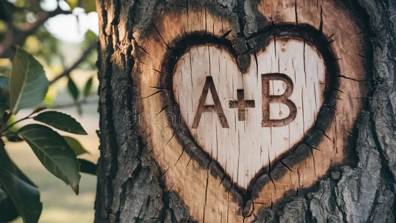
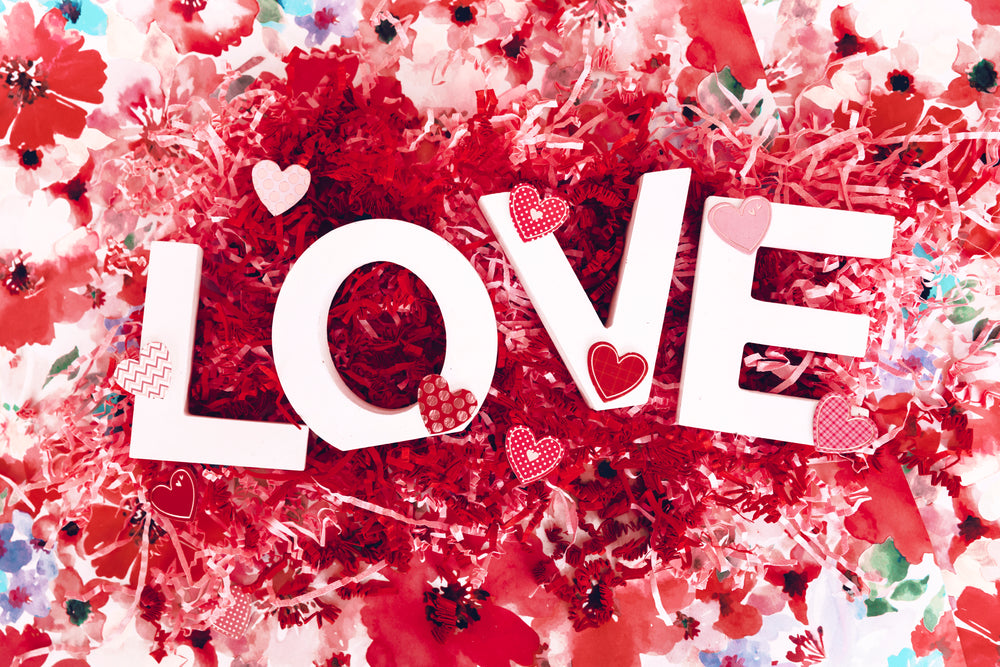

Are you in love? (Kristen Cabrera, 2025)
This work invites users to confess hidden love by entering their initials and their crush’s initials, echoing the act of carving names into a tree as a symbol of lasting affection.
https://thinkinboutyou.com
Love (Michael Samyn, 1995)
Presented on a pink background, Love reduces affection to its simplest gestures. The more I explored this work, the more I realized that love is not complicated—it can be as simple as enjoying everyday moments, seeing someone smile, or writing the name of someone we love.
https://anthology.rhizome.org/love
My Boyfriend Came Back from the War (Olia Lialina, 1996)
Using browser frames and hypertext, this work highlights the emotional distance and fragmentation of reunion, blurring the boundary between cinema and early web art.
https://sites.rhizome.org/anthology/lialina.html